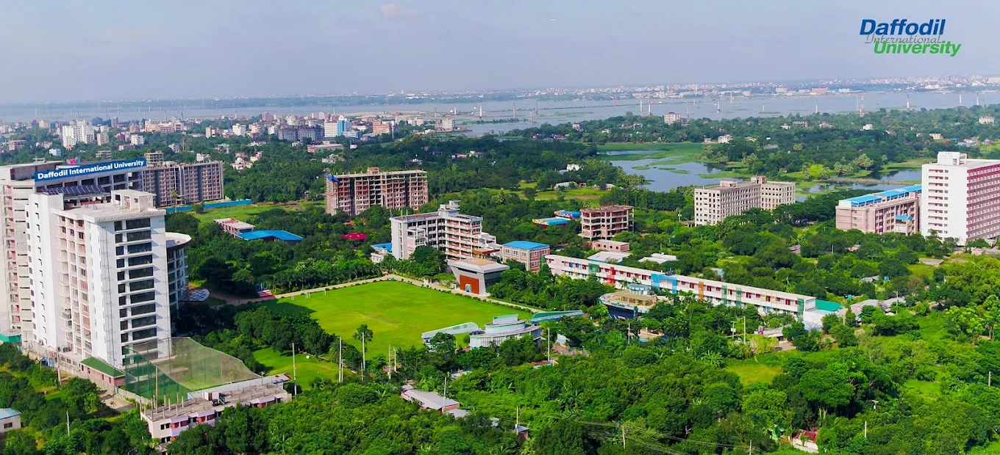
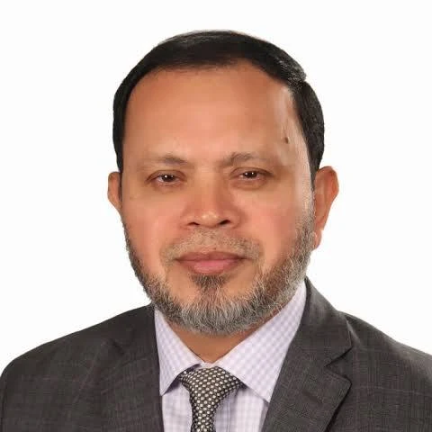

Daffodil International University is a private research university located in Daffodil Smart City, Birulia, Savar, Dhaka -1216, Bangladesh. It was established on 24 January 2002 under the Private University Act of 1992. DIU is the largest private university in Bangladesh by its campus size.



Dr. Md. Sabur Khan is the Founder and Chairman of the Board of Trustees of Daffodil International University (DIU). He is a well-known entrepreneur, educationist, and ICT pioneer in Bangladesh. He founded DIU in 2002 with the vision of providing quality, innovation-driven education. He is also the founder of Daffodil Computers PLC and has made significant contributions to entrepreneurship, technology, and higher education. His leadership has inspired many students to become skilled professionals and entrepreneurs.